Plan de Medios · Universo Digital — Diversificación de Medios 2026
Actualizado al 30 de octubre de 2026
Plan de medios · 2026
Meta como base activa + Google Ads, TikTok Ads y Programmatic Native para ampliar
alcance, registros y migración digital de Gana · Antioquia 2026
Meta activa
Google Ads
TikTok Ads
Programmatic

Estado actual — Meta activa nuevamente · Octubre 2026
Fuente: Meta Ads · cuenta Gana · 1 al 29 de octubre de 2026 · La pauta volvió a correr con normalidad
$36.2M
Inversión octubre
Mayor inversión de los últimos 3 meses
7.0M
Alcance
Frecuencia 4.1
28.7M
Impresiones
CPM $1.259 COP
301K
Clics
10 campañas activas hoy
Inversión mensual en Meta · COP
* Al 29 de octubre
Qué cambia en este plan
Meta vuelve a ser la base de alcance y tráfico de Gana. Los demás canales ya no entran como reemplazo sino como complemento.
Antes · Contingencia
Mover todo el presupuesto de Meta a TikTok y Programmatic para no detener la inversión.
Ahora · Diversificación
Meta queda en $20M al mes y se suma un presupuesto de diversificación de $30M.
Nuevo · Google Ads
Search, YouTube / Demand Gen y Performance Max entran al plan. Hoy en verificación: requiere el certificado de Coljuegos.
Dónde está la inversión de Meta · Octubre
Gana · Tráfico Retención Bases de datos
Tráfico · Reactivación de la base de clientes
Always On · Alcance por producto
Super Chance · Placa Millonaria · Goleador · Keno · Raspa y Listo
Gana · Activación (Alcance + Tráfico)
Alcance Advantage+ y tráfico a gana.com.co
Regionales cerrados · Oriente y ARA
Placa Millonaria y Goleador Oriente · Tiendas Ara
Keno · Adulto Mayor · NuBank · Placa
Alcance táctico y tráfico de producto
Meta hoy no mide registros (0 en los reportes de octubre). Con el evento de registro configurado podría volver a optimizar a registro: en mayo logró un CPA de $2.411.
Meta está activa y en su mes de mayor inversión de los últimos tres. El plan pasa de contingencia a diversificación: se mantiene Meta como base y se suman Google, TikTok y Programmatic para crecer en registros sin depender de un solo canal.

Historial — Lo que ya probamos · Abril a octubre 2026
Fuentes: informes de pauta de Gana (resumen y línea de tiempo abr–jul, capítulo ATL, informe de septiembre y avance al 27 de octubre)
Meta · CP_GANA
Abril — mayo
$9,8M · CPA $2.411
Casi cumplió la meta de registros: el canal más eficiente del período.
Cayó el 29 de mayo al retirarse el medio de pago. La cuenta sigue deshabilitada.
$36,2M en octubre
Tráfico a la BD a $58–62 por visita. Always On con CPM de $740–960, entre 37% y 61% bajo el objetivo.
No mide registros: 0 en los reportes de octubre.
TikTok · Adcom - Gana
Mayo — julio
$55M · 11.846 conv.
CPA promedio $4.643. En julio bajó a $3.960 con videos que explican el producto.
Escalar ×2,47 en junio llevó el CPA a $6.301. Los conjuntos dirigidos a la BD costaron $22.000–$28.600.
Programática
Abril — junio
$39,3M · 4 formatos
Push fue el eje: 21,3M impresiones a CPM de $465. Spotify salió por CTR de 0,15%.
Sirvió para alcance, no para registro.
$30M DOOH · $155M ATL
Hasta 12 pantallas en Medellín. 175 menciones de TV regional y 821 cuñas en 15 emisoras.
Construyó presencia offline de Placa Millonaria; fuera del alcance de este plan digital.
Canal nuevo
Gana nunca ha pautado en Google (YouTube incluido). Es el único canal del plan sin datos propios.
Verificación en proceso: falta el certificado de Coljuegos para activar Search, YouTube y Performance Max.
Siete meses de pauta dejan tres lecturas: Meta es eficiente pero frágil, TikTok rinde con públicos fríos y videos de producto (no escalando de golpe) y la programática sirve para alcance. La propuesta se construye sobre esos números.

Contexto — Por qué diversificar · Más allá de un solo canal
Las caídas de Meta en 2026 confirmaron una decisión estratégica que debía tomarse · DataReportal Mid-Year 2026
6.12B
Usuarios internet globales
+59M en el último año · Abr 2026
5.79B
En redes sociales globales
+5.4% YoY · 294M nuevos usuarios
5.83B
Usuarios móviles únicos
89.1% smartphones · broadband
2.42B
Usuarios activos GenAI
+141% en 12 meses · nueva frontera
El ecosistema va más allá de Meta
Meta tiene cambios estratégicos en 2026
DataReportal Mid-Year 2026 reporta cambios en el foco de Meta como plataforma. Las cuentas en industrias sensibles como gambling enfrentan mayor escrutinio. En mayo CP_GANA quedó deshabilitada por el medio de pago y la cuenta actual tuvo una restricción reciente. La pauta ya corre, pero el riesgo sigue.
Saturación y CPM al alza en Meta
Meta concentra toda la competencia del sector gambling. CPMs en aumento constante. La diversificación reduce la dependencia y baja el CPA global del mix.
Un canal único es un punto único de falla
En junio y julio, sin Meta, TikTok sostuvo sola la pauta social y se perdió el trabajo sobre la BD. Google, TikTok y Programmatic no son alternativas — son la estructura de resiliencia que toda marca digital necesita tener activa.
La oportunidad real ahora mismo
Google y TikTok: intención y audiencias nuevas
Google captura a quien ya busca resultados, chance y lotería. TikTok suma ~19.4M usuarios en Colombia (~2M en Antioquia) con menor competencia publicitaria en gambling.
Programmatic: presencia sin riesgo de suspensión
La web abierta no tiene el riesgo de suspensión repentina de los walled gardens. Inventario en portales de noticias y lotería de Antioquia, disponible de inmediato y sin depender de una sola plataforma.
Insight · DataReportal Mid-Year 2026
Los usuarios de redes sociales crecen +5.4% anual globalmente. El presupuesto debe seguir a las audiencias — no concentrarse en una sola plataforma.
La pausa de Meta confirmó lo que los datos ya mostraban: un solo canal es un riesgo estratégico. Con Meta activa de nuevo, es el momento de sumar Google, TikTok y Programmatic sin presión de urgencia.

Universo Digital — Colombia 2026 · El mercado que debemos cubrir
Fuente: DataReportal Digital 2026: Colombia · Meta + el mercado disponible en otros inventarios
53.6M
Población Colombia
Mediana de edad 32.5 años
41.7M
Usuarios de internet
77.8% de penetración
37.7M
En redes sociales
70.4% de la población
83M
Conexiones móviles
155% · 100% broadband
Alcance publicitario por plataforma · Colombia
Facebook / Meta · Activa
~32M
YouTube (Google) ← Activar~29M
YouTube + TikTok + Programmatic suman inventario que Meta no cubre. A esto se suma Google Search: la intención de búsqueda.
Edad · Perfil del jugador Gana
El mercado sigue ahí. Hay que alcanzarlo.
41.7M usuarios de internet en Colombia. Meta llega a una parte; Google, TikTok y Programmatic amplían la cobertura y capturan al jugador en otros momentos del día.
Meta sigue siendo la base de alcance. Google (Search y YouTube), TikTok y Programmatic amplían la cobertura y suman intención de búsqueda que ninguna red social ofrece.

Medios Propuestos — Google Ads + TikTok Ads + Programmatic · Complemento de Meta
TikTok y Programática ya se probaron en Gana (abr–jul) y vuelven con sus aprendizajes · Google, el canal nuevo, se detalla en la siguiente sección
TikTok Ads
Mayor plataforma de video mobile en Colombia
~19M usuarios Colombia · ~2M Antioquia
Audiencia 21–55 años con afinidad a lotería, chance y entretenimiento. 52 minutos de uso diario. Menor competencia publicitaria que Meta en gambling.
Objetivo: Conversiones (Website) con píxel
Video nativo In-Feed. El registro ocurre en la landing de Gana. Misma lógica de conversión de Meta, con inventario y audiencias nuevas.
Cuenta, píxel y allowlist ya operando
La cuenta Adcom - Gana corrió de mayo a julio con 11.846 conversiones a $4.643 en promedio. No se parte de cero.
Proyección: 2.280 registros · $10M COP
CPA objetivo $4.500 · real may–jul $4.643 · Antioquia
Programmatic
El alcance más amplio · Sin riesgo de suspensión
~41M alcance Colombia · Web abierta
Portales de noticias, sitios de resultados de lotería, blogs de entretenimiento en Antioquia. Inventario garantizado sin dependencia de una sola plataforma.
Native Ads · Contextual en portales de lotería
Impacta al usuario mientras consulta resultados de sorteos. El contexto más relevante para Gana. Sin riesgo de suspensión por política de plataforma.
Estabilidad operativa garantizada
La web abierta no tiene el riesgo de suspensión repentina de los walled gardens. Una vez activo, el canal opera sin interrupciones por cambios de política.
Proyección: $5M COP · 15K visitas + 3,5M impresiones
Push y Geofence ya probados (abr–jun) · Native contextual es la prueba nueva
TikTok vuelve con lo que funcionó de mayo a julio. Programática regresa al rol que mostró en abril–junio: alcance. Google, en la siguiente sección, es el único canal nuevo.

TikTok Ads — Ventajas y Oportunidades · El complemento natural de Meta
TikTok comparte la lógica de conversión de Meta pero con audiencias nuevas, menor competencia y CPMs más bajos en gambling
19.4M
Usuarios TikTok Colombia
~2M alcanzables en Antioquia
52 min
Tiempo de uso diario
Mayor exposición que Meta
2x
Mayor engagement
vs otras redes sociales · video nativo
Misma lógica de conversión que Meta
Website Conversions con píxel, optimización por evento de registro, retargeting de visitantes, lookalike de bases. La estructura de campaña que ya conoce Gana, aplicada en TikTok.
Audiencias que Meta no tenía
TikTok llega a usuarios 21–45 que migraron de Facebook o tienen banner blindness en Meta. En Antioquia, son los jugadores presenciales de chance con smartphone que nunca vieron los ads de Gana.
Segmentación por afinidad a lotería
Segmentar por hashtags consumidos (#chance, #baloto, #lotería, #resultados) y comportamiento de contenido. Usuarios con mentalidad de juego activa antes de que lleguen a la competencia.
CPM más bajo que Meta en gambling
Menos anunciantes de gambling compiten en TikTok. Esta ventana de menor competencia baja el CPA de registro. La primera marca en ocupar bien este espacio en Antioquia tendrá ventaja duradera.
Migración presencial → digital
El jugador presencial antioqueño consume TikTok en las tardes. Un video de 15s que muestre "juega igual pero desde el celular" con bono de bienvenida es el puente perfecto al canal digital.
KPI objetivo: $4.500 COP por registro
Proyección: 2.280 registros con $10M COP. Histórico may–jul: $4.643 promedio y $2.635 en el mejor momento (julio). Se retoman los conjuntos fríos que mejor rindieron.
TikTok ya demostró su valor en Gana: 11.846 conversiones entre mayo y julio. Rindió con públicos fríos, videos que explican el producto y presupuesto estable; escalar de golpe (×2,47 en junio) duplicó el CPA.

TikTok — Lo que corrió · Las 6 piezas con más conversiones · May–Jul 2026
Fuente: TikTok Business API · cuenta Adcom - Gana · 1 de mayo al 31 de julio de 2026 · Duplicados de una misma pieza sumados
Registro placa
9 jul · Beneficio del producto
Haz valer tu placa
17 may · Aspiracional
¿Ya jugaste placa?
13 may · Facilidad y acceso
Primer carro familiar
13 may · Ganancias y posibilidad
UGC
26 jun · UGC · creador
Placa familiar
17 may · Aspiracional
Ganó el producto explicado
"Registro placa" consiguió la mayor cantidad de conversiones al menor costo: $2.229, menos de la mitad que los aspiracionales de mayo.
El aspiracional trajo volumen, más caro
"Haz valer tu placa" y "Primer carro familiar" sumaron casi 2.900 conversiones, a CPA de $5.000 a $5.300.
UGC: buena atención, CPA alto
Los videos de creador de junio costaron $6.388 a $6.756 por conversión. Sirven para variar la parrilla, no como eje.
La reactivación arranca con una tanda nueva de videos que expliquen el producto (cómo registrarse y jugar), al estilo de "Registro placa", y usa los aspiracionales como complemento.

Programmatic Native — Ventajas y Oportunidades · Presencia garantizada sin riesgo
El canal más estable: web abierta, contextual en portales de lotería de Antioquia, sin riesgo de suspensión por política de plataforma
+53%
Mayor CTR
Native Ads vs display tradicional
41M
Alcance Colombia
Web abierta · sin walled gardens
0
Riesgo de suspensión
Inventario de web abierta estable
Continuidad sin depender de una plataforma
A diferencia de Meta, el inventario programático no depende de la política de una sola plataforma. Una vez configurado el DSP y las audiencias, el canal opera de forma continua sin riesgo de interrupción repentina.
Intercepta intención activa de juego
Llega al usuario exactamente cuando consulta resultados de lotería Antioquia, lee sobre premios o visita portales de entretenimiento local. Contexto imposible de replicar en Meta o TikTok.
Geo preciso en Antioquia · Activación rápida
Medellín, Bello, Itagüí, Envigado, Rionegro y municipios del Oriente y Occidente. Inventario disponible hoy en portales de resultados de lotería y noticias locales antioqueñas.
Native no se percibe como publicidad
El formato imita el contenido editorial. El usuario hace clic por curiosidad, no por presión. Para gambling, donde la credibilidad importa, el formato nativo genera más confianza que el banner tradicional.
Landings personalizadas por segmento
Quien consulta resultados → landing consulta + registro. Quien lee sobre premios → social proof. Quien navega entretenimiento → catálogo Gana. Cada usuario llega al mensaje correcto.
$5M · Alcance + prueba de Native
Entre abril y junio la programática ($39,3M) sirvió para alcance, no para registro. Push fue el eje y Spotify se descartó (CTR 0,15%). Ahora: Push y Geofence para alcance y una prueba de Native en portales de resultados.
Programática vuelve con un rol claro: alcance. Push y Geofence ya probaron su entrega en Gana; Native contextual en portales de resultados es la prueba nueva, medida por visitas y registros asistidos.
Programática — Lo que corrió · Piezas y resultado por formato · Abr–Jun 2026
Fuente: GANA | Fuente de Data (entrega del proveedor) · 29 de abril al 10 de junio de 2026 · Campaña Gana | Placa Millonaria
Display móvil
App Targeting y Geofence · minuto30.com
Spotify
Audio + display · "Hoy tu placa puede cambiarlo todo"
Display escritorio · elcolombiano.com · mismo arte en formato vertical
Formato
Inversión
Impresiones
CPM
Lectura para el plan
Push
$9,9M
21,3M
$465
Se mantieneEl más eficiente en alcance. Sin preview: es una notificación de texto.
Geofence
$10,9M
3,56M
$3.062
Se mantienePico a fin de mayo cerca de los puntos de venta.
App Targeting
$14,5M
1,91M
$7.597
Pasa a NativeCTR de 2–3% a fin de mayo, pero el CPM más alto después de Spotify.
Spotify
$3,9M
80,8K
$48.400
Se descartaCTR de 0,15%. Salió el 10 de mayo.
La pieza de Placa Millonaria ("¿Quieres ganarte hasta $3.000 millones?") fue la misma en todos los formatos. Para la nueva etapa: Push y Geofence se mantienen por costo, App Targeting se reemplaza por la prueba de Native en portales de resultados y Spotify no vuelve.

Google Ads — Search · YouTube / Demand Gen · Performance Max
El canal que captura intención: el usuario que busca resultados, chance o lotería ya está a un clic del registro · Geo Antioquia · En proceso de verificación: requiere el certificado de Coljuegos
Marca · Gana, Oki, Super Chance
Protege la marca frente a competidores que pujan por "Gana" y lleva directo a gana.com.co/registro/.
Resultados · chance y lotería Antioquia
El mayor volumen de búsqueda del sector. Anuncio con CTA doble: consulta el resultado y regístrate para jugar.
Genéricas · jugar chance online
Captura al jugador presencial que busca cómo jugar desde el celular. Mensaje de migración.
$8M · ~1.333 registros
CPA objetivo $6.000 COP · Estimado, sin historial
YouTube / Demand Gen
YouTube es parte de Google: misma cuenta y misma certificación
Shorts, In-Feed, Discover y Gmail
Reutiliza los videos 9:16 de TikTok y los mejores creativos de Meta. Una sola producción, tres canales.
Audiencias de intención
Segmentos personalizados de quienes buscaron lotería y chance + Customer Match con la BD presencial Antioquia.
Storytelling antioqueño
El benchmark muestra que en YouTube funciona la historia personal, no el premio. Encaja con el ángulo regional.
$4M · ~444 registros
CPA objetivo $9.000 COP · Optimización a conversión
Performance Max
ConversiónTodo el inventario de Google
Search, YouTube, Display, Discover, Gmail y Maps en una campaña optimizada a registro.
Señales de audiencia
BD de compradores, visitantes web y lookalikes como punto de partida. Se excluyen términos de marca para no canibalizar Search.
Escala controlada
Entra después de 2 semanas de Search, con historial de conversión. Se escala si el CPA se mantiene ≤ $7.000.
$3M · ~429 registros
CPA objetivo $7.000 COP · Fase 2 · Semana 3
En proceso · Verificación de Google
La verificación de juegos de azar ya está en curso. Para ponerla en marcha falta el certificado de Coljuegos de Gana. Sin él no se activa ninguna campaña, YouTube incluido.
Medición · Etiqueta de Google en registro
Conversión de registro y primera compra en gana.com.co (Google tag o GA4 importado). Es la señal que optimiza Search, Demand Gen y PMax.
Políticas · Mismas reglas que Meta y TikTok
+18 visible, juego responsable, sin promesas de ganancia. Segmentación +21 y exclusión de la BD activa en campañas de adquisición.
Google es el único canal del mix que llega al jugador en el momento en que busca. Search entra primero para generar historial de conversión. YouTube reutiliza los videos verticales y PMax escala desde la semana 3. Inversión propuesta: $15M COP al mes para las 3 campañas y ~2.206 registros. YouTube hace parte de Google: se compra desde la misma cuenta. Los CPA son estimados con referencia a TikTok ($4.643) y Meta ($2.411) y se validan en el piloto.

Segmentación — Audiencias · Antioquia · Sin duplicar bases · Migración presencial
Estructura de audiencias diseñada para capturar nuevos jugadores, migrar clientes presenciales y evitar duplicidad
TikTok · 4 grupos · lo que funcionó en julio
Frío Intereses Antioquia · 40%
Intereses: Lotería · Chance · Baloto · Super Astro · Gaming · Entretenimiento antioqueño
Edad: 21–55 · Excl.: compradores activos
LAL Fieles + Hashtag · 50% ← Mejor CPA
LAL de compradores fieles (la BD como semilla) + hashtags de juego (#chance, #lotería). Sostuvieron el mejor CPA de julio: $2.635–$2.867.
Prueba fin de semana + RMKT · 10%
Franja vie–dom (CPA $2.973 en la prueba de julio) + visitantes sin registro
Urgencia · CPA $6.000 COP
Programmatic · 3 formatos
Native · Portales de resultados · 50%
Contextual en portales de resultados Baloto, Lotería de Medellín y sorteos Antioquia
Prueba nueva · Landing: consulta + registro
Push notifications · 30%
El formato más eficiente: 21,3M impresiones a CPM de $465
Rol: alcance y recordación de sorteos
Geofence puntos de venta · 20%
Celulares cerca de los puntos de venta Gana
Puente presencial → digital
Landing: juega desde el celular
Estrategia anti-duplicidad
Exclusión de bases activas
Las BD de compradores y registrados se suben a TikTok y Google como exclusión en adquisición. Meta sigue trabajando la retención sobre esas bases.
Mensajes exclusivamente digitales
Beneficios que no tiene el canal físico: Oki online, bono de bienvenida digital, juega desde cualquier lugar. Diferencia el canal sin canibalizar el punto de venta.
La BD como semilla, no como público
En TikTok, los conjuntos dirigidos a la BD costaron $22.000–$28.600 por registro, frente a $5.291 en frío. La BD se usa para crear lookalikes y como exclusión.
La BD se aprovecha donde ya rinde: retención en Meta (tráfico a $58–62 por visita) y semilla de lookalikes en TikTok. En adquisición se excluye para no pagar dos veces por el mismo cliente.

Formatos e Incentivos — Pauta disponible y materiales promocionales por canal
Qué formatos están disponibles para gambling en cada canal, incentivos recomendados y exclusividad digital de producto
TikTok Ads
Solo auction estándar para gambling
In-Feed Ads
Video 9:16 en For You Page. 9–60s. CTA a landing de Gana. Alta frecuencia, CPM bajo. Formato principal de activación.
Activar primero
TopView
Pantalla completa al abrir la app. 100% SOV. Para momentos de lanzamiento. Requiere mayor presupuesto.
Fase 2
No disponibles · Spark Ads · Branded Content
Solo formatos auction estándar para gambling. La cuenta ya tiene allowlist; cada creativo nuevo pasa por validación.
Incentivos · Exclusividad digital
· Bono de bienvenida Oki ($4.000) visible desde el inicio del video
· "Solo online, solo en Gana digital" — diferencia del canal físico
· Super Chance primer juego · Tutorial de registro en 15 segundos
Programmatic
Native Ads · Web abierta
Native In-Feed
Titular + imagen + fuente. Se integra al feed editorial. Sin banner blindness. Activación inmediata en portales lotería Antioquia.
Activar primero
Content Recommendation
Widget al final del contenido. Usuario en lectura profunda. Alta intención de click. Taboola / Outbrain.
Taboola
Programmatic Video Pre-roll
Pre-roll en portales de entretenimiento y noticias locales Antioquia. Contextual por contenido visto. DV360 / TheTradeDesk.
Incentivos · Mensajes por landing
· "Consulta tus resultados y juega hoy en Gana" — acción doble
· Bono de primer registro en la landing de destino
· Social proof: ganadores reales de Antioquia este mes
Los incentivos digitales exclusivos (Oki, Super Chance, bono de bienvenida) crean una propuesta diferenciada del canal físico. El usuario tiene una razón adicional para registrarse en el canal digital de Gana.

Migración — Presencial → Digital · Sin duplicar bases · Exclusividad por canal
Cómo los nuevos medios contribuyen a convertir el jugador físico de Antioquia en cliente digital · Sin canibalizar el punto de venta
El jugador presencial antioqueño · El público más valioso
1
Conoce el producto. No conoce el canal.
Compra chance y lotería en el punto físico. Tiene smartphone, usa TikTok o navega portales de noticias. Ya confía en Gana. Solo necesita el puente digital.
2
TikTok lo encuentra en sus tardes.
Tarde-noche, cuando ya salió del punto de venta, está en TikTok. El LAL de BD presencial en TikTok llega exactamente a perfiles idénticos al jugador físico de Antioquia.
3
Programmatic lo alcanza cuando consulta resultados.
El jugador presencial consulta resultados en portales locales de Antioquia. Ese es el momento de mayor intención. Programmatic lo impacta exactamente ahí con CTA de registro.
Exclusividad por canal · Sin canibalización
Canal físico comunica
Tradición · Confianza · Atención personal · Experiencia presencial · Punto de venta cercano
Canal digital comunica
Facilidad · Rapidez · Bono Oki exclusivo · Anywhere, anytime · Historial y consulta
Táctica de migración · LAL presencial en TikTok
1
Subir BD compradores juegos presenciales Antioquia a TikTok
2
Crear Lookalike 1–3% → perfil idéntico al jugador físico
3
Mensaje: "Jugabas en el punto, ahora juega desde tu celular" + bono exclusivo
El jugador presencial ya confía en Gana. TikTok + Programmatic construyen el puente digital en los momentos exactos donde está disponible: consumiendo contenido y consultando resultados en Antioquia.

TikTok — Políticas de Video · Lo que sí y lo que no para Gambling
Requisitos para producir creatividades aprobadas por TikTok · Industria de gambling · Colombia · Cumplimiento obligatorio antes de activar
Obligatorio en todos los videos
Disclaimer de juego responsable
+18 visible en Safe Zone desde el inicio. Mensaje de responsabilidad. Aplican T&C. No al final — desde el primer segundo.
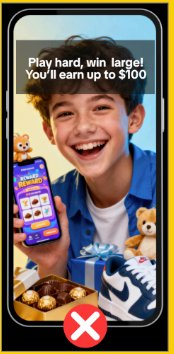
Modelos +21 años
Sin actores que parezcan menores. Segmentación mínima +21 en plataforma. TikTok rechaza si considera los modelos menores de edad.
Allowlist vigente · validación por creativo
La cuenta Adcom - Gana ya pautó gambling de mayo a julio. Revalidar si cambia el dominio o el producto, y validar copies antes de producir.
Contenido prohibido (genera rechazos y puede derivar en suspensión)
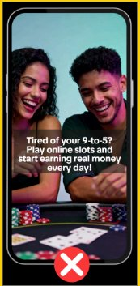
Prometer ganancias económicas
"Gana dinero todos los días", "Deja tu trabajo", "Hazte rico rápido". Cualquier promesa de estabilidad o ganancia financiera.
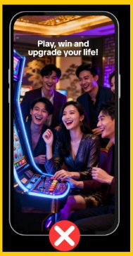
Glamurizar el gambling
Estilo de vida lujoso, escenarios excéntricos, el juego como cambio de vida garantizado. Mensajes aspiracionales sin validación previa.
Formatos no disponibles · Solo auction estándar
Spark Ads y Branded Content no disponibles para gambling. El cumplimiento estricto es lo que garantiza que TikTok no tenga el mismo problema que Meta.
El cumplimiento de las políticas de TikTok es la garantía de estabilidad del canal. A diferencia de Meta, TikTok tiene un proceso de aprobación predecible que, siguiendo los lineamientos, protege la cuenta de suspensiones.

Creativos Meta — Overview, Consideraciones y Guía de Adaptación
12 creativos de mejor rendimiento · Gana Web y App · Base para adaptación a TikTok y Programmatic
Gana Web · Registros
video_car_superchance · video_ganadores_cc
Oki Raquel · Cualquier lugar y momento
4 creativos
Gana Web · Compras
Bre-B Carmen · Content Beneficios 11/11
Saltos mujer · Urgencia Manu · Carmen
5 creativos
Gana App · Registros
Beneficio del producto App
Verifica cuenta · Cayo Baloto
3 creativos
Consideraciones de producción
Bono Oki · Actualizar a $4.000 COP
Todo el contenido que comunique el bono Oki debe mostrar el valor actualizado. Revisar en todos los creativos antes de activar en nuevos canales.
Super Chance · Verificar valor $4.500 COP
El contenido que comunique Super Chance debe mostrar correctamente el valor de compra. Validar antes de activar en TikTok o Programmatic.
Reglas de adaptación Meta → TikTok
Formato:Re-editar a 9:16. Hook en primeros 2 segundos.
Disclaimer:Integrado al diseño desde el segundo 1. No al final.
Tono:Creativos orgánicos (Bre-B, Carmen) → prioridad TikTok.
Ángulo:Entretenimiento y facilidad. Sin promesas económicas.
Valores:Oki $4.000 y Super Chance $4.500 verificados antes de subir.
12 creativos de mejor rendimiento en Meta organizados en 3 categorías. Facilidad, urgencia y beneficio del producto (Oki / Super Chance) son los ángulos más transferibles a TikTok y Programmatic.

Creativos — Gana Web · Registros · 4 Mejores Videos
Contenido de mayor rendimiento para captación de registros · Adaptables a TikTok In-Feed y Programmatic Native
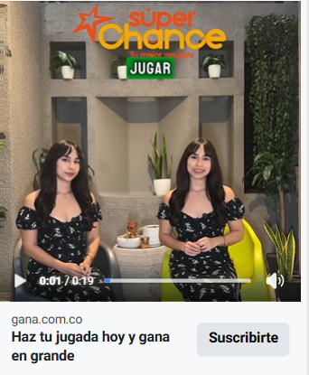
Gana Web · Reg. · Feb
video_car_superchance
Super Chance · Beneficio del producto
Beneficio producto
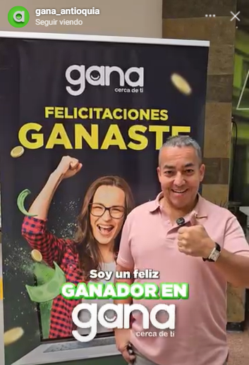
Gana Web · Reg. · Mar
video_ganadores_cc
Ganadores · Social proof regional
Social proof
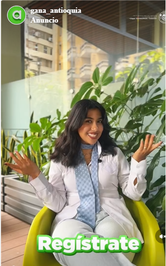
Gana Web · Reg. · Abr
Oki Raquel
Beneficio producto · Oki $4.000 COP
Oki · $4.000 ⚠
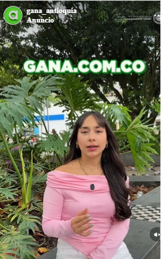
Gana Web · Reg. · May
Cualquier lugar y momento
Beneficio producto · Anywhere · Mobile
Facilidad · Migración
'Cualquier lugar y momento' es el creativo más directo para el mensaje de migración presencial→digital. 'Oki Raquel' tiene el mejor ángulo de beneficio exclusivo digital. Verificar valor $4.000 COP antes de activar.

Creativos — Gana Web · Compras · 5 Mejores Videos
Mayor rendimiento para primeras compras · Bre-B y Carmen son los más orgánicos y transferibles a TikTok
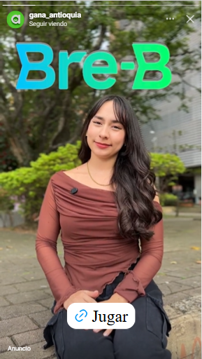
Gana Web · Comp. · Abr
Bre-B Carmen
Beneficio producto · Orgánico · Top
Top TikTok
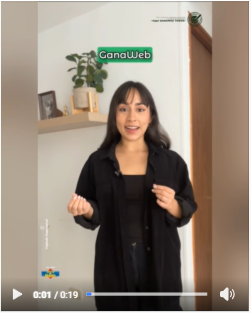
Gana Web · Comp. · Nov
Content Beneficios 11/11
Beneficio producto · Urgencia
Urgencia
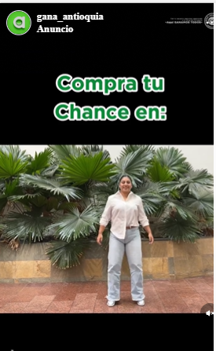
Gana Web · Comp. · Feb
Saltos mujer · URL juegos
Acción · Visita catálogo de juegos
Acción
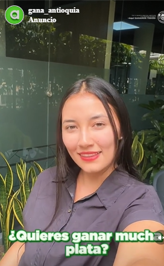
Gana Web · Comp. · Abr
Urgencia · Juega hoy · Manu
Urgencia y activación · RMKT BOFU
Top RMKT
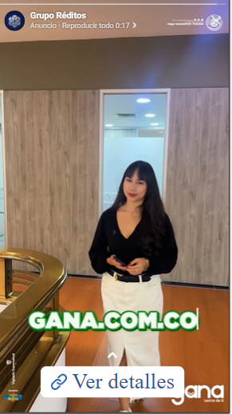
Gana Web · Comp. · Abr
Facilidad y acceso · Carmen
Facilidad · Chance desde el celular
Facilidad
Bre-B Carmen y Facilidad·Carmen son los creativos con tono más orgánico — el formato perfecto para TikTok. Urgencia·Manu es el mejor candidato para RMKT de no-registrados. Super Chance $4.500 verificar antes de activar.

Creativos — Gana App · Registros + Guía Adaptación Meta → TikTok
3 creativos de Gana App · Tutorial y onboarding como mensaje de migración · Reglas de adaptación a TikTok In-Feed
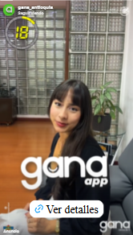
Gana App · Reg. · Abr
Beneficio del producto App
Tutorial · Cómo usar la app
Tutorial · Migración
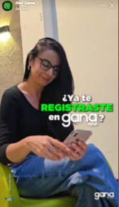
Gana App · Reg. · Mar
Verifica cuenta
Onboarding · Verificación de cuenta
Onboarding
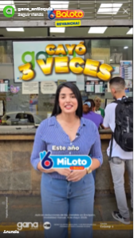
Gana App · Reg. · May
Cayo Baloto
Posibilidad · Reel · TOFU
Posibilidad
Adaptación Meta → TikTok
Formato 9:16 nativo
Re-editar de Meta (4:5 o 1:1) a vertical 9:16. Contenido ya filmado en vertical tiene ventaja directa.
Hook en los primeros 2 segundos
TikTok exige captura inmediata. Mover el mensaje principal al inicio — no al final como en Meta.
Disclaimer integrado al diseño
+18 y juego responsable visibles en Safe Zone desde el segundo 1. No como overlay final.
Bre-B / Carmen → prioridad
Tono orgánico y auténtico funciona mejor en TikTok que en Meta. Primer candidato de adaptación.
Validar valores antes de activar
Oki → $4.000 COP · Super Chance → $4.500 COP. Verificar en cada creativo antes de subir.
Los tutoriales de App (Beneficio del producto, Verifica cuenta) son ideales para el mensaje de migración presencial→digital. Cayo Baloto funciona bien en TOFU siempre que no prometa ganancias económicas.

Creativos — Mejores Ángulos por Canal · Adaptación desde Meta
Los creativos que mejor funcionaron en Meta son el punto de partida · Adaptación a TikTok 9:16 y Native Programmatic
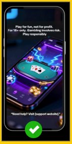
TikTok · Ángulo principal
Entretenimiento responsable + facilidad. Tutorial de registro de 15s. "Juega igual que en el punto físico, pero desde tu celular." Disclaimer integrado desde el segundo 1.
TikTok · Migración presencial
"Jugabas en el punto, ahora juega desde donde estés." Bono de bienvenida digital exclusivo visible. Tono orgánico antioqueño, no producción costosa.
Adaptación Meta → TikTok · Reglas clave
· 9:16 nativo con hook en primeros 2 segundos (no al final)
· Disclaimer integrado al diseño desde el inicio, no overlay final
· Bre-B / Carmen / Manu — tono orgánico funciona aún mejor en TikTok
· Urgencia sin promesa económica: "Juega hoy el sorteo de las 3pm"
· Oki ($4.000) y Super Chance ($4.500) como gancho de primera compra
Creativos · Programmatic Native Antioquia
Titular contextual de resultados
"¿Ya revisaste si ganaste hoy? Consulta y juega en Gana" — imita el contenido editorial del portal de resultados.
Social proof · Ganadores de Antioquia
"Antioqueños que ganaron con Gana este mes" — prueba social regional sin prometer resultados. Landing: registro inmediato.
Imagen del app Gana en uso cotidiano
"Tu chance, desde tu celular". Imagen cotidiana, no lujosa. Formato 1200×628. Sin elementos aspiracionales.
Regla de oro · Todos los canales
"El ángulo siempre es entretenimiento y facilidad, nunca ganancias económicas. El producto se vende mostrando la experiencia, no el resultado. Este es el mensaje que TikTok aprueba y el usuario de Antioquia entiende."
Lo que ya probamos: en TikTok ganaron los videos que explican el producto (julio, CPA $2.635) y el UGC; en tráfico de Meta, la pieza estática aspiracional ("Ese número oriente", $80 por visita) superó al video. Adaptación técnica: 9:16, hook en 2 s y disclaimer al inicio.

Mix de Medios — Flow consolidado por canal · Inversión mensual propuesta
Propuesta a validar con Gana · TikTok y Programática: proyectados con su historial · Google: estimado y en verificación · Cifras en COP
Canal
Rol en el mix
Objetivo
Inversión / mes
KPI
Resultado
Meta · Activa
Always On por producto + tráfico de retención y activación sobre la BD
Alcance · Tráfico
$20M
CPM $740–960 · $58–62/visita
~3,9M alcance*
Google · Search
Intención: marca, resultados y genéricas de chance y lotería
Registro
$8M
CPA $6.000 (est.)
~1.333 reg.
Google · YouTube / DG
YouTube es parte de Google · video vertical con audiencias de intención
Registro
$4M
CPA $9.000 (est.)
~444 reg.
Google · PMax
Escala de conversión en todo el inventario Google · Fase 2
Registro
$3M
CPA $7.000 (est.)
~429 reg.
TikTok Ads
Reactivación con públicos fríos, LAL fieles y videos de producto
Registro
$10M
CPA $4.500 (real $4.643)
~2.280 reg.
Programmatic
Push y Geofence para alcance + prueba de Native en portales de resultados
Alcance · Tráfico
$5M
CPM · visitas
3,5M impr. · 15K visitas
Total digital
Meta $20M + diversificación $30M
$50M
~4.486 reg.
* Meta: alcance estimado en proporción a octubre ($36,2M → 7,0M de alcance). Hoy no mide registros; si se configura el evento, se suma a la proyección. Google: en verificación, se activa al recibir el certificado de Coljuegos.
Participación de la inversión · $50M / mes
Meta · $20MSearch · $8MYouTube/DG · $4MPMax · $3MTikTok · $10MProgrammatic · $5M
$50M
Inversión mensual
Meta $20M · Google $15M · TikTok $10M · Prog. $5M
4.486
Registros proyectados
TikTok 2.280 · Google 2.206
$5.600
CPA promedio
TikTok + Google
~1.346
Compradores estimados
30% tasa conversión
TikTok se proyecta con su CPA real de mayo a julio, Programática vuelve a su rol de alcance y Google, el único canal sin historial en Gana, arranca con Search cuando se complete la verificación con el certificado de Coljuegos. La distribución se revisa cada mes con el CPA real de cada canal.

Tácticos — Flow TikTok + Programmatic · KPIs · Proyección · Gana Antioquia
CPA y entrega proyectados con el historial de Gana (TikTok may–jul · programática abr–jun) · El detalle de Google está en la slide de Google Ads
TikTok Ads · Reactivación · Conversiones en gana.com.co/registro/
%
Audiencia · Grupo
Ángulo creativo
Inversión
CPA Obj.
Registros
40%
Frío Intereses Antioquia
Lotería · Chance · Placa · Gaming · 21–55 · Excl. compradores
Producto explicado · "Cómo registrarte y jugar"
$4M
$4.000
1.000
25%
LAL Fieles Gana
BD de compradores solo como semilla · nunca como público directo
Migración · "Jugabas en el punto" · Bono Oki
$2.5M
$4.500
556
25%
Frío Hashtag
#chance · #lotería · #resultados
UGC · Facilidad desde el celular
$2.5M
$4.500
556
10%
Prueba fin de semana + RMKT
Franja vie–dom · visitantes sin registro
Urgencia · "Juega hoy el sorteo"
$1M
$6.000
167
Programmatic · Alcance + prueba de Native · Antioquia
%
Formato · Segmento
Rol
Inversión
KPI
Resultado
50%
Native · Portales de resultados
Contextual Antioquia · prueba nueva
Consulta + CTA registro
$2.5M
Visitas
~15K
30%
Push notifications
Real abr–jun: 21,3M impresiones a CPM $465
Alcance · recordación de sorteos
$1.5M
CPM ~$465
~3,2M impr.
20%
Geofence puntos de venta
Celulares cerca de los puntos Gana
Migración presencial → digital
$1M
CPM ~$3.060
~330K impr.
CPM de Push y Geofence: real de abril a junio, según la fuente de data del proveedor. Native: estimado, sin historial en Gana.
$15M
Inversión
TikTok $10M + Programmatic $5M
2.280
Registros proyectados
TikTok · CPA promedio $4.390
3,5M
Impresiones + 15K visitas
Programmatic · Antioquia
~684
Compradores estimados
30% tasa conversión
TikTok vuelve con $10M al mes, por debajo del nivel de julio ($17,7M y 4.475 registros), lo que protege el CPA. Para escalar, máximo 20% por semana: en junio, subir ×2,47 de golpe llevó el CPA a $8.308 en la semana pico.

Próximos Pasos — Plan de Activación · Esta semana · Esta quincena · Mes 1
1
Aprobar el mix y el presupuesto
Validar con Gana el mix de $50M al mes: Meta $20M, Google $15M, TikTok $10M y Programmatic $5M.
2
Coljuegos para Google + cuenta TikTok
Enviar a Google el certificado de Coljuegos para completar la verificación, que ya está en proceso. En TikTok, revisar saldo y topes: la entrega se cayó el 27 de julio con la campaña aún activa.
3
Reactivar Programmatic
Push y Geofence con lo aprendido en abril–junio. Native en portales de resultados como prueba nueva, activa en 48 h.
Esta quincena · Días 5–15
4
Etiqueta Google + registro en Meta
Configurar la conversión de registro y primera compra para Google y para la cuenta actual de Meta, que hoy no mide registros. Validar que el píxel de TikTok siga recibiendo el evento.
5
Subir BD presencial a TikTok y Google
Usar la BD como semilla de LAL en TikTok y Customer Match en Google, nunca como público directo en TikTok: costó $22.000–$28.600 por registro.
6
Guía creativa compliant + primeros videos
Nueva tanda de videos de producto explicado y UGC (los que ganaron en julio) para TikTok y YouTube Shorts. Disclaimer desde el segundo 1.
Mes 1 · Piloto y escalabilidad
7
Reactivar TikTok + piloto Google Search
Medir el CPA real contra el objetivo ($4.500 TikTok · $6.000 Search). Activar Demand Gen y PMax en la semana 3 si Search tiene historial de conversión.
8
Revisión mensual del mix
Reasignar presupuesto según el CPA real. Escalar TikTok máximo 20% por semana: en junio, subir ×2,47 de golpe duplicó el CPA.
El resultado esperado
Gana pasa de depender de un canal a operar con cuatro: Meta como base de alcance, Google para la intención, TikTok para audiencias nuevas y Programmatic para la presencia en la web abierta.

Retail Media — Rappi Ads · La SuperApp #1 de Latam como canal de pauta
30M usuarios activos · +600K comercios · Audiencias segmentadas por comportamiento de compra real · Colombia y Latam
30M
Usuarios activos
Resuelven su vida en Rappi
+500
Ciudades
En 9 países de Latam
+600K
Comercios activos
Restaurants, super, farma y más
+350K
Repartidores
Red logística propia
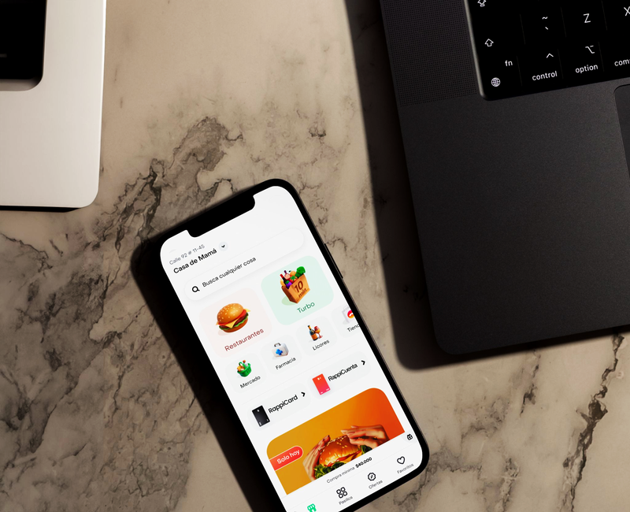
SuperApp #1 de Latam
Conecta el ecosistema — restaurants, supermercado, farma, ecommerce, turbo y finanzas en una sola app
Por qué Rappi Ads para Gana
Audiencias por comportamiento real de compra
Rappi conoce qué compra cada usuario, con qué frecuencia, en qué categorías y en qué ciudades. No son intereses declarados — son datos de comportamiento transaccional real.
Antioquia: 9% de los usuarios de Rappi Pay
Antioquia es la segunda ciudad en peso dentro de Rappi Pay (+380K usuarios potenciales). NSE medio-alto con cupo promedio de $7.5M — perfil alineado con el jugador digital de Gana.
Canal no-endémico con alto potencial
Gana no es una marca nativa de Rappi — y eso es la oportunidad. El usuario está en un mindset de compra activa, con mayor disposición al descubrimiento de nuevos productos y servicios digitales.
Rappi Ads es retail media de primera party data: audiencias construidas sobre comportamiento de compra real, no cookies. Para Gana, el acceso al usuario antioqueño NSE medio-alto en el momento de mayor intención de gasto es el diferencial.

Rappi Ads — Audiencias · Segmentación por Comportamiento Real de Compra
Audiencias construidas sobre datos transaccionales de 30M usuarios · No cookies · First party data real
Audiencias principales · Colombia
2.7M
Restaurants
Mayor audiencia Rappi
1.1M
Turbo
Vertical de mayor crecimiento
976K
Pharma
Cuidado personal / salud
741K
Super
Supermercado online
560K
eCommerce
Compras online frecuentes
494K
Pro Users
Suscriptores premium
Rappi Pay · Audiencia relevante para Gana
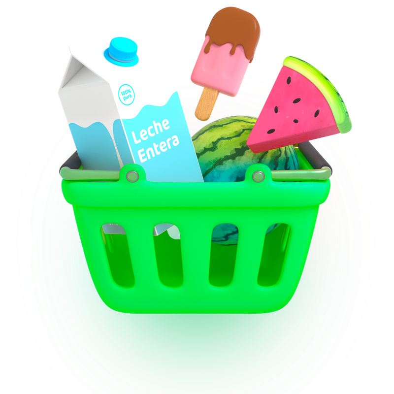
+380K usuarios Rappi Pay
NSE medio-alto · Cupo promedio $7.5M · Ticket promedio $1.3M/mes
Distribución geográfica · Rappi Pay
Rappi Pay en Medellín: 9% del total nacional con +34K usuarios de NSE medio-alto disponibles para impactar. El perfil (cupo $7.5M, ticket $1.3M/mes) coincide con el jugador digital de mayor valor para Gana.

Rappi Ads — Soluciones y Formatos · Full Funnel InApp + Amplify
3 mundos de soluciones: InApp (endémico), Amplify (display + audiencias), Media OOH · Full funnel de reconocimiento a conversión
InApp
SmartAds · SmartBrands
SmartAds · IA + Primera data
›Search global · Category banner · Subcategory banner
›Checkout · Headline · Vertical corredor
›Optimización mensual de presupuesto e impresiones
Comms
Push · InApp · Email
Mensajes personalizados y segmentados
›InApp GIF: CTR 3x mayor vs piezas estáticas
›Push/SMS: +38% ventas en el momento del impacto
›Email Marketing: +17% ventas en promedio
Amplify
Display + Lookalike
Amplify · Audiencias + Lookalike
›Audiencias Rappi + modelos Lookalike
›Crecimiento de hasta el 35% con Lookalike
›Conecta online con offline: OOH + transaccionalidad
Tres mundos de soluciones complementarios: InApp para impactar al usuario dentro de Rappi, Comms para mensajes personalizados con alta conversión, y Amplify para llevar las audiencias de Rappi fuera de la app con Lookalike hasta 35% de crecimiento.

Rappi Ads — Full Funnel · Estrategia de Activación para Gana · Antioquia
Cómo Rappi complementa TikTok y Programmatic para cerrar el funnel · Casos de éxito de lanzamiento en plataforma
Full funnel Rappi · Reconocimiento → Conversión
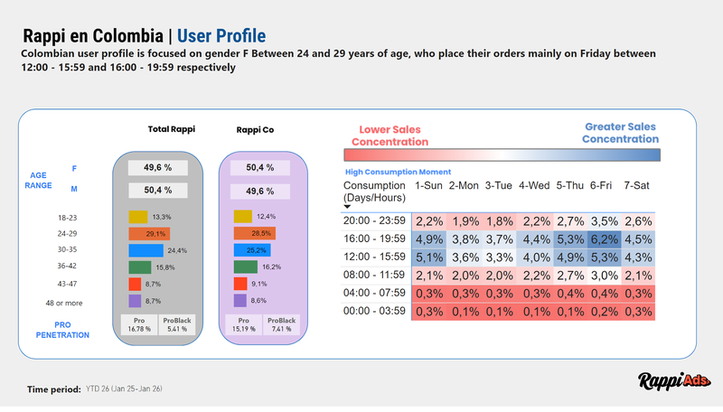
Construcción de marca + Performance
Desde reconocimiento hasta conversión dentro del ecosistema Rappi. Conectando el mundo online con el offline, activando estrategias 360
TOFU
Amplify + Comms Reconocimiento de marca Gana digital
MOFU
InApp GIF + Push Consideración e intención de registro
BOFU
Retargeting usuarios que vieron el anuncio → CTA registro Gana
Casos de lanzamiento en Rappi
Turbo Lab · Caso de lanzamiento
+10K compradores impactados · 1.84 ROI en primer mes
Oportunidad para Gana · Seasonalities 2026
Copa América · Partidos en vivo
Cervezas +104%, Licores +66% durante partidos. El usuario de apuestas deportivas está activo en Rappi en esos momentos.
Fechas especiales · Día del Padre / Madre
Usuario en mindset de regalo con mayor disposición al descubrimiento. Ideal para posicionar Gana digital como "plan diferente".
Retargeting OOH → Digital
Conectar puntos de venta físicos de Gana en Antioquia con activaciones digitales en Rappi. Usuario que ve el OOH → impacto in-app → registro digital.
Rappi completa el ecosistema de medios de Gana: First party data transaccional, audiencias por comportamiento real de compra, y la capacidad de conectar el punto de venta físico con la conversión digital — el canal ideal para migración presencial.

Benchmark — Gana vs Competencia · Análisis de Mensajes en Meta y YouTube
Análisis de comunicación publicitaria: Gana, Baloto y SuperGIROS · Meta Ads y YouTube · Hallazgos clave
Gana · Estilo actual
Institucional
Mensaje centrado en producto, sorteo y legalidad. Bajo nivel comercial y aspiracional.
Baloto · Estilo
Aspiracional
Vende viajes, casas, experiencias, futuro. El acumulado es el vehículo, no el mensaje.
SuperGIROS · Estilo
Dual
Emoción para generar demanda. Funcionalidades para convertir. Dos niveles distintos.
El hallazgo clave
Comunican beneficio de forma indirecta
La competencia no aprueba más en Meta por ser conservadora. Aprueba porque no vende el premio — vende lo que el usuario imagina hacer con él.
Gana vs Competencia · Comparativa de variables
Variable
Gana
Competencia
Institucional
Muy alto
Bajo
Comercial
Bajo
Alto
Aspiracional
Bajo
Alto
Emocional
Bajo
Alto
CTA directos
Pocos
Frecuentes
Lo que Gana comunica
El producto
El sorteo
El premio
La legalidad
La compra
Lo que comunica la competencia
Lo que el usuario imagina hacer
Lo que siente y podría vivir
Experiencias y emociones
Historias con personas reales
CTA directos frecuentes
El hallazgo más importante: la competencia no pasa la moderación de Meta por ser más conservadora — la pasa porque comunica el beneficio de forma indirecta. No vende el premio, vende lo que el usuario sueña hacer con él.

Benchmark — Baloto · Estrategia de Mensajes y Ads en Meta
Baloto vende viajes, casas y experiencias · El acumulado es el vehículo, no el mensaje · Cerca del límite de políticas
Distribución de mensajes Baloto
Cambio de vida · Sueños
Alta
Acumulados · Premios
Alta
Viajes · Lujo
Media
Urgencia
Media
Hallazgo importante
Baloto está cerca del límite de políticas de Meta. Lo que lo salva: no promete ganancias directas. En lugar de eso usa: Posibilidad · Imaginación · Aspiración · Experiencias.
Lo que evita decir:
Hazte rico · Gana dinero fácil · Garantizado
Sal de deudas · Asegura tu futuro
Lo que sí usa:
Esa casa · Ese viaje · Ese sueño
Tu oportunidad · Construye tu futuro
Ads de Baloto en Meta · Ejemplos reales
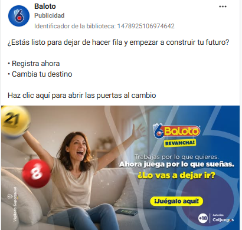
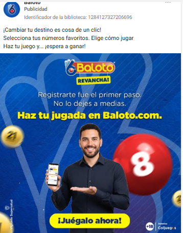
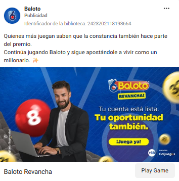
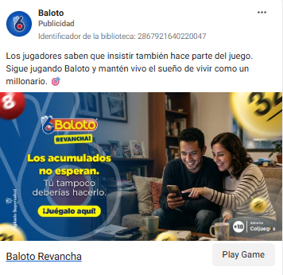
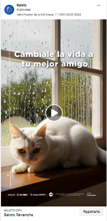
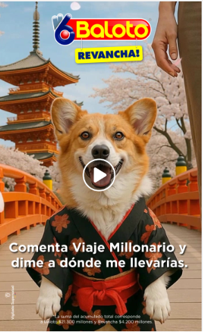
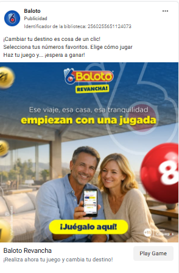
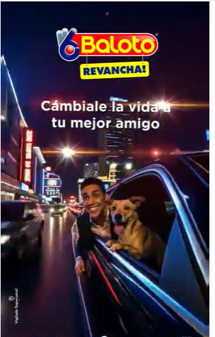
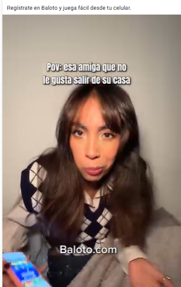
Patrón visual Baloto
Personas felices · Escenas de vida soñada · Acumulados como contexto, no como promesa · CTA directo y frecuente
Baloto aprueba en Meta porque vende experiencias, no dinero. 'Esa casa. Ese viaje. Ese sueño.' — el acumulado es el vehículo. Esta diferencia psicológica es enorme y es exactamente lo que Gana puede replicar.

Benchmark — SuperGIROS · Estrategia Dual · Emoción + Funcionalidad
SuperGIROS opera en dos niveles: emoción para generar demanda, funcionalidades para convertir · El modelo más sofisticado
Estrategia dual de SuperGIROS
Nivel 1 · Generación de demanda
Contenido emocional: suerte, entretenimiento, oportunidad, historias. Miles de usuarios probando suerte. Tu número de la suerte.
Nivel 2 · Conversión
Contenido funcional: descarga la app, compra tu lotería, haz tu recarga, utiliza nuestros servicios.
Insight estratégico
El anuncio que vende no es necesariamente el anuncio que habla de premios. Cuando quiere vender juego utiliza emoción. Cuando quiere vender conversión utiliza funcionalidades.
Esta estrategia reduce la exposición al rechazo de Meta. El contenido emocional no hace promesas directas y el funcional comunica acción sin aspiraciones.
Para Gana: aplicar este mismo modelo. Creativos de chance y lotería con emoción para TOFU. Creativos funcionales de app y registro para MOFU/BOFU.
Ads de SuperGIROS en Meta · Ejemplos reales
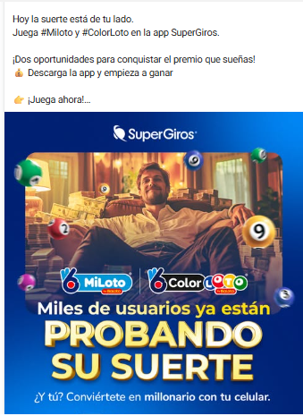
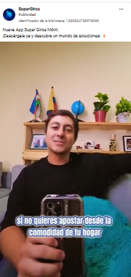
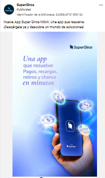
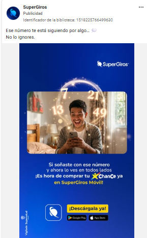
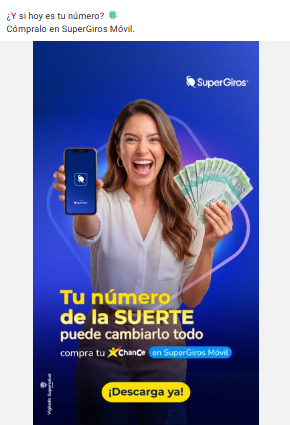
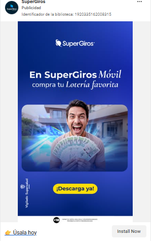
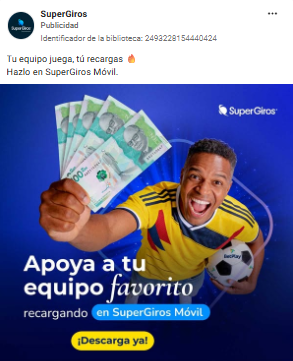
SuperGIROS separa emoción de conversión. El ad de emoción crea deseo sin prometer ganancias. El ad funcional cierra con CTA directo. Gana puede replicar este modelo: TikTok y TOFU programmatic con emoción, RMKT y MOFU con funcionalidad.

Benchmark — YouTube · Conclusiones y Recomendaciones para Gana
Storytelling en YouTube · Lo que Meta aprueba consistentemente · Oportunidades para Gana en los nuevos canales
YouTube · SuperGIROS y Paga Todo
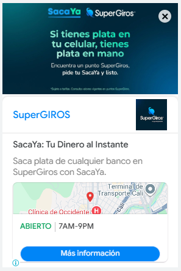
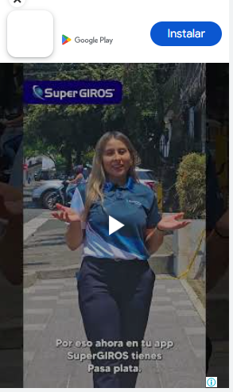
SuperGIROS YouTube
Formato vertical · Persona protagonista · Storytelling personal · Tono cercano · No se centra en acumulados. La venta ocurre desde la historia, no desde el premio.
Paga Todo YouTube
Comunicación promocional · Beneficios · Programa de referidos · Orientada a acción concreta, no al sueño de hacerse rico.
Lo que Meta aprueba consistentemente
Acumulados y millones como cifra, no promesa
Sueños · Viajes · Casas · Experiencias
Personas felices · Oportunidades · Suerte
Historias aspiracionales con narrativa personal
CTA directos con acción concreta
Funcionalidades y beneficios de app
Lo que Meta rechaza
Hazte rico · Soluciona tus problemas · Sal de deudas · Gana dinero fácil · Garantizado · Asegura tu futuro económico
Recomendaciones para Gana
Comunicar desde el deseo, no la categoría
"¿Y si este fuera tu momento?" en lugar de "Compra. Regístrate. Sorteo." El foco en la emoción reduce el riesgo de rechazo y aumenta el engagement.
Separar creativo de demanda del de conversión
TOFU: emoción y aspiración (suerte, oportunidad, experiencias). MOFU/BOFU: funcionalidad y facilidad (registrarse, comprar desde el celular, Oki, Super Chance).
Apostar por storytelling y personas reales
YouTube y TikTok confirman que la narrativa personal funciona mejor que la institucional. Menos logos, menos producto, más historias de antioqueños reales.
La ventaja competitiva disponible
Gana tiene presencia local en Antioquia que Baloto y SuperGIROS no tienen. El mensaje regional con personas reales de Antioquia es un diferenciador que la competencia no puede replicar fácilmente.
El benchmark confirma la oportunidad: Gana puede mantener su esencia pero cambiar el foco del mensaje — del producto a la experiencia. En TikTok, YouTube y Programmatic, este cambio es especialmente poderoso por el formato y el contexto de consumo.